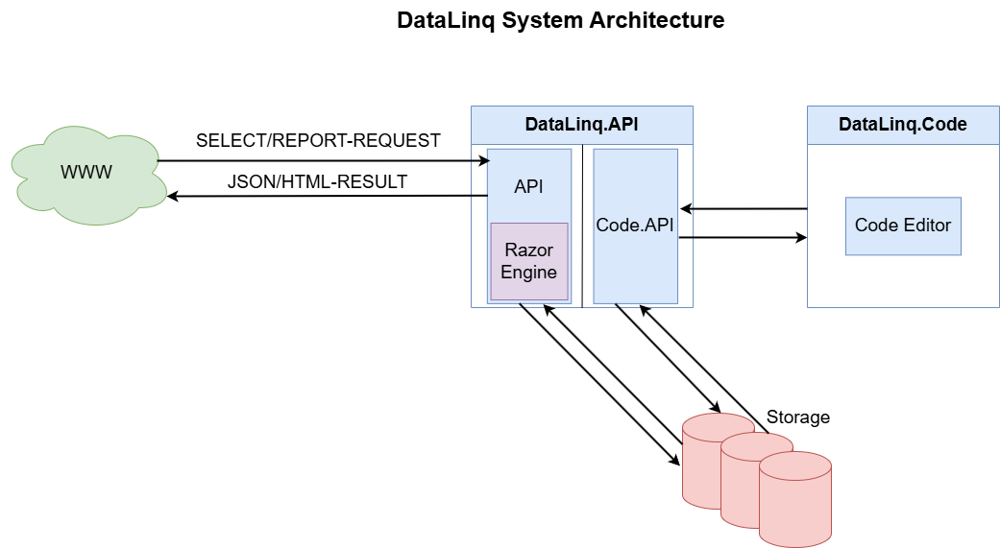

Systemarchitektur von WebGIS DataLinq¶
Übersicht¶
WebGIS DataLinq basiert auf einer modularen Architektur, die eine effiziente Abfrage, Verarbeitung und Visualisierung von Daten ermöglicht. Die Hauptkomponenten des Systems bestehen aus dem Web-Zugriffspunkt (WWW), der DataLinq API, der DataLinq Razor Engine, der DataLinq Code API sowie der separaten DataLinq Code-Applikation zur Verwaltung von Endpunkten, Abfragen und Ansichten.
Architekturkomponenten¶
WWW – Externe Anfragen¶
Das System empfängt externe Anfragen über das WWW. Diese Anfragen können zwei verschiedene Typen haben:
SELECT-Requests: Fordern Rohdaten im JSON-Format an.
REPORT-Requests: Fordern aufbereitete HTML-Berichte an.
DataLinq API¶
Die DataLinq API bildet das zentrale Element der Architektur und übernimmt folgende Aufgaben:
Empfang und Verarbeitung von Anfragen
Bereitstellung von Datenquellen (Endpoints), Abfragen (Queries) und Ansichten (Views)
Speicherung und Verwaltung von Konfigurationen im Storage-System (Dateibasiert)
Rendern von HTML-Ergebnissen über die DataLinq Razor Engine
Storage¶
Das Storage-System ist eine Dateiablage, die die folgenden Konfigurationsdaten verwaltet:
Endpoints (Datenquellen-Definitionen)
Queries (Datenabfragen)
Views (Darstellungsoptionen)
Diese Struktur ermöglicht eine einfache Verwaltung und schnelle Wiederverwendung von Abfragen und Darstellungen.
DataLinq Razor Engine¶
Die DataLinq Razor Engine ist in die DataLinq API integriert und übernimmt die Verarbeitung von REPORT-Requests. Sie:
Rendert die Razor-basierten HTML-Seiten
Wandelt die Daten aus den Queries in eine formatierte Darstellung um
Erstellt interaktive Visualisierungen und Reports
DataLinq Code API & DataLinq Code¶
Die DataLinq Code API dient als Schnittstelle zwischen der DataLinq API und einer separaten DataLinq Code-Applikation, die als Editor fungiert. Diese Komponenten ermöglichen es Benutzern, die Systemkonfiguration anzupassen:
DataLinq Code bietet eine grafische Oberfläche zur Erstellung und Bearbeitung von Endpoints, Queries und Views.
Die DataLinq Code API nimmt diese Konfigurationsänderungen entgegen und speichert sie im Storage-System ab.
Zusammenfassung des Datenflusses¶
WWW sendet SELECT oder REPORT-Requests an die DataLinq API.
Die DataLinq API verarbeitet die Anfrage:
SELECT-Requests liefern JSON-Daten zurück.
REPORT-Requests werden von der DataLinq Razor Engine gerendert und als HTML zurückgegeben.
Benutzer verwalten Endpoints, Queries und Views über DataLinq Code, wobei die DataLinq Code API diese Änderungen speichert.